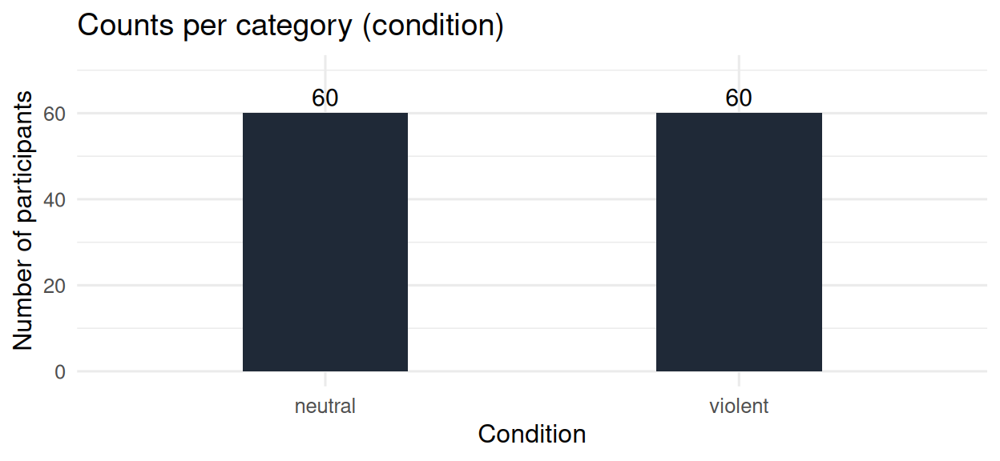
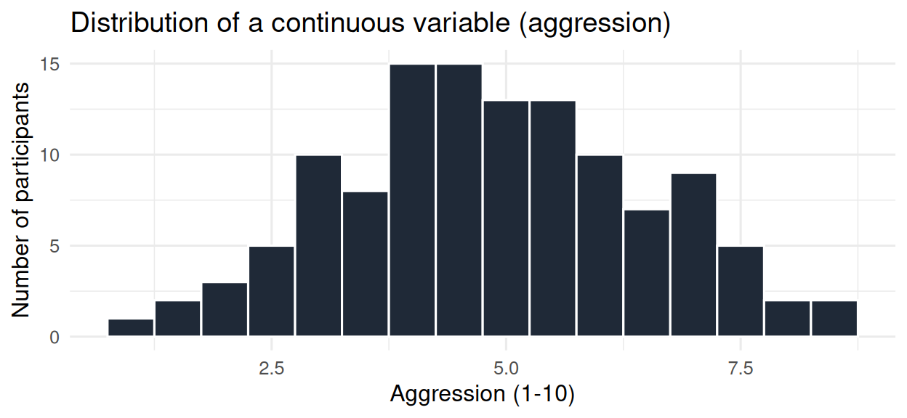
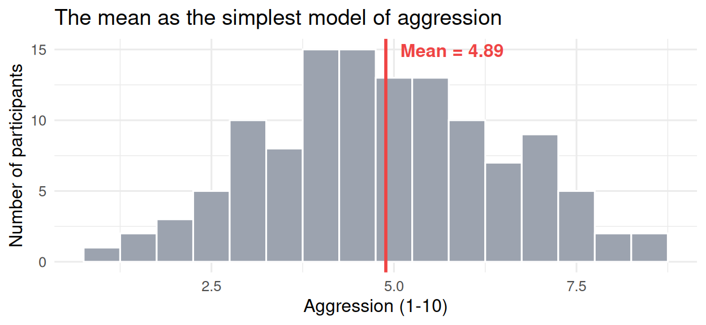

13 Data and the idea of a statistical model
13.1 Where we are now
Section 1 taught you how R works. Section 2 taught you how to take a raw data file and turn it into the specific summaries and plots you need to actually look at the data. Together, those two sections covered the work that precedes any analysis.
Section 3 is about analysis itself, and specifically about a single, unifying framework that organizes most of the statistics you will use as a researcher in psychology and the social sciences. That framework is statistical modeling. It is not a single technique; it is a way of thinking that connects descriptive statistics (which you already know) to linear regression, ANOVA, t-tests, multiple regression, and beyond. Once you see the framework, the techniques fall into place as small variations on a single theme.
This chapter is the first of eight chapters on statistical modeling and regression. It is purely conceptual; it has no regression code. The goal is to install three ideas firmly enough that the rest of Section 3 can build on them: what data is, what a model is, and why the mean (which you have computed many times by now) can be thought of as the simplest possible model of a dataset. The next chapter will put those ideas to work with R code.
13.2 What is data?
You have already worked with data throughout this book, especially in Section 2. We pause here to state explicitly the small set of facts about data that the rest of Section 3 will rely on.
13.2.1 The structure of a dataset
You met this in Chapter 5 and reinforced it in Chapter 8: a dataset is a rectangular table.
- Each row is one case, observation, or unit of analysis. In
vgames_study.csv, each row is one participant. - Each column is one variable. In
vgames_study.csv, the columns areparticipant_id,age,gender,condition,hours_weekly,trait_hostility,empathy, andaggression.
This is the standard structure that statistical procedures expect. Almost all of the techniques in the rest of this book assume your data is organized this way (sometimes called tidy data, in the tidyverse sense). When raw data does not look like this, the work of Chapters 8 through 12 turns it into something that does.
13.2.2 The type of each variable matters
The kind of variable a column contains determines what you can do with it. The three types you will see most often in psychology:
Continuous variables (also called numeric or quantitative) take values on a numeric scale. The differences between values are meaningful. In our dataset: age (in years), hours_weekly (hours per week), trait_hostility (1 to 7), empathy (1 to 7), aggression (1 to 10). You can compute means, standard deviations, and correlations on continuous variables.
Categorical variables (also called nominal or qualitative) take values that represent groups or categories, with no natural numeric scale. In our dataset: condition ("violent" or "neutral"), gender ("man", "woman", "non-binary"). The “mean” of these values is meaningless: there is no average of "violent" and "neutral". What you compute on categorical variables are counts and proportions.
Ordinal variables take values that have a natural order but where the differences between values are not necessarily equal. A common example is education level (high school, bachelor’s, master’s, doctorate): there is an order, but the gap between “high school” and “bachelor’s” is not necessarily the same as the gap between “master’s” and “doctorate.” For this book, we treat ordinal variables simply, often analyzing them as if they were continuous when there are enough categories to support that.
A useful preview of why this matters: in the regression models you will fit in the rest of Section 3, R needs to know which kind of variable each predictor is. Treating a categorical variable as if it were continuous, or vice versa, produces wrong answers. We will see in Chapter 17 how R handles categorical predictors automatically, using the factor variables you met in Chapter 11.

The two pictures above use the same dataset but answer different questions. For the categorical variable condition, we ask “how many participants are in each category?” and the answer is a count per bar. For the continuous variable aggression, we ask “what is the shape of the distribution?” and the answer is a histogram. The natural summary in the first case is a count; the natural summary in the second is something like a mean, accompanied by a measure of spread.
13.3 What is a model?
Statistics borrows the word model from everyday life, where it means roughly the same thing.
A map is a model of a territory. The map of the Vienna U-Bahn does not show every building, every park, every cobblestone. It shows only the train lines and stops. The map is “wrong” in a strict sense, in that it omits almost everything in the city. But it is useful for a specific purpose: getting around the subway. A map that showed every brick in every building would not be useful at all; it would be as complex as the city itself.
A caricature is a model of a face. It exaggerates a few features (a prominent chin, a large pair of eyebrows) and ignores the rest. It captures something essential about the person while leaving out detail.
A weather forecast is a model of the atmosphere. It compresses the enormously complex dynamics of pressure, temperature, humidity, wind, terrain, and ocean temperatures into “tomorrow will be 18 degrees and partly cloudy.” It is not a complete description of what the air will do tomorrow; it is a useful summary.
All models share two features:
- They simplify: they leave things out.
- They are useful for specific purposes, but not for everything.
The statistician George Box, who worked on industrial quality control and is widely cited in this context, summarized this with a now-famous sentence:
All models are wrong, but some are useful.
The point is not that “wrong” is a problem to be avoided. The point is that simplification is the whole job of a model. A model that did not simplify would be the data itself, restated in slightly different words. There would be no insight in it.
In statistics, a model is a precise, mathematical, simplified description of the data. Like the map, it leaves things out. Like the map, it is useful for some purposes (predicting, summarizing, comparing groups, testing hypotheses) and not others. And like the map, simpler is sometimes better, even if a more complex model would technically describe the data more accurately.
13.4 The mean as the simplest model
We can now state something you have already used many times in a new way. You have been computing means since Chapter 6 (where mean() was introduced as a summary function). You computed group means in Chapter 8 and again in Chapter 9 (where you also computed residuals from the mean and saw that the sum of squared residuals shrank when you used the group means instead of the grand mean).
Here is the new way to think about all of that work:
The mean is a statistical model. It is the simplest possible model of a dataset. The model says: “if you had to predict any participant’s score on this variable, predict the mean.”
Consider the aggression scores of the 120 participants in vgames_study. The mean is approximately 4.89. We can describe a model that uses this single number:
Model 1: every participant’s predicted aggression score is 4.89.
This model is obviously wrong for most participants: participant 5 scored 6.7, participant 12 scored 5.7, participant 1 scored 4.2. None of them scored exactly 4.89. But the model is also obviously useful: it gives a single, communicable summary of the 120 numbers. If someone asked “about how aggressive were participants in this study?” the answer “around 4.89 on a 1 to 10 scale” is far more useful than handing them all 120 raw scores.

The red vertical line is the model’s single prediction. The grey bars are the 120 observed scores. The distance between each bar and the red line, for each participant, is what the model misses. Those distances will be the topic of the next chapter.
13.4.1 Why this matters
Once you accept that the mean is a model, three things follow.
First, all other statistical techniques are extensions of this idea. In the next chapter we will look at the differences between observed and predicted scores (residuals) and at a way to quantify how badly the model misses (sum of squared residuals). In Chapter 15 we will replace the single mean with a line: a model that predicts a different value for each participant depending on a continuous predictor. In Chapter 17 we will replace the line with a model that uses several predictors at once. In every case, the structure is the same: data, a model that makes a prediction for each observation, residuals (what the model misses), and a measure of how well the model fits.
Second, a more complex model is not automatically better. A model that predicted each participant’s exact score (using 120 numbers, one per participant) would have zero residuals. It would be a “perfect fit.” It would also be useless: it would not simplify anything, it would not reveal any pattern, and it would not generalize to participants you have not yet measured. The art is to choose a model simple enough to be informative and complex enough to capture the patterns you care about. This trade-off has a formal name, the bias-variance trade-off, and it will appear explicitly in Chapter 19.
Third, modeling and inference are different activities. Everything described in this chapter, and in the rest of Section 3 up to Chapter 18, is descriptive. We describe data; we fit models; we compare how well they fit. We do not make claims about whether an effect is “statistically significant,” whether the slope in a population is different from zero, or whether the result generalizes to people we did not sample. Those are questions of statistical inference, a separate set of ideas that will appear in a later section of the book. Keeping description and inference separate in your mind is, in our view, one of the most useful intellectual habits in statistics.
13.5 Looking ahead
Chapter 14 takes the same ideas and makes them concrete in R. You will compute residuals from the grand mean and from group means on a small dataset; you will compute the sum of squared residuals for each; and you will see that the group-means model has a smaller sum of squared residuals, exactly as you did with the aggression data in Chapter 9. This time the framing is different: you are not just computing a sum, you are evaluating the fit of a model.
Then Chapter 15 introduces the simple linear model, which replaces the one-number-per-group structure with a continuous predictor and a line. By the end of Chapter 16 you will be fitting and interpreting your first regression models in R.
13.6 Further reading
Danielle Navarro’s free textbook Learning Statistics with R (version 0.6) is an excellent companion reference. Chapter 5 (“Descriptive statistics”) covers central tendency and variability from a more traditional descriptive-statistics perspective, and Chapter 2 (“A brief introduction to research design,” especially Section 2.2 on scales of measurement) goes deeper into variable types. The book is available at https://learningstatisticswithr.com.
13.7 Check your understanding
1. What is a “dataset” in the form most statistical procedures expect?
2. Why does the type of a variable (continuous, categorical, ordinal) matter?
3. What is a statistical model?
4. What is the meaning of George Box’s statement “All models are wrong, but some are useful”?
5. In what sense is the mean of a dataset a statistical model?
6. What is the trade-off between simple and complex models?
7. What is the difference between modeling and inference, as introduced in this chapter?
13.8 References
Box, G. E. P. (1979). Robustness in the strategy of scientific model building. In R. L. Launer & G. N. Wilkinson (Eds.), Robustness in statistics (pp. 201-236). Academic Press.
Navarro, D. J. (2018). Learning statistics with R: A tutorial for psychology students and other beginners (Version 0.6). https://learningstatisticswithr.com